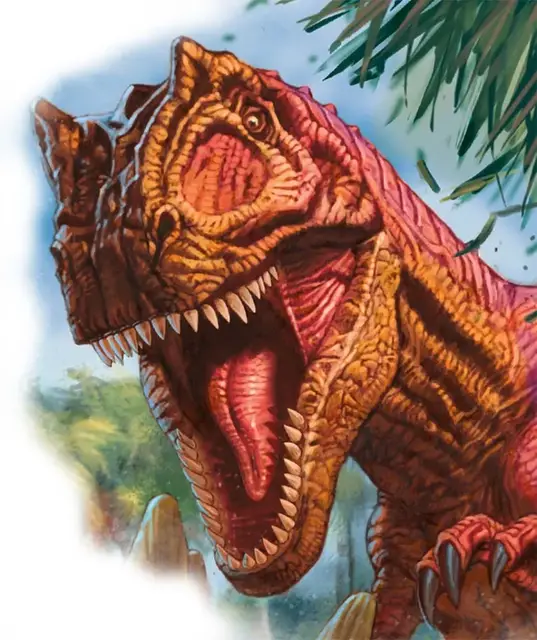

Тираннозавр рекс
Tyrannosaurus Rex
Огромный Зверь, без мировоззрения

Класс Доспеха 13 (природный доспех)
Хиты 136 (13к12 + 52)
Скорость 50 футов
| мод | спас | ||
|---|---|---|---|
| СИЛ | 25 | +7 | +7 |
| ЛОВ | 10 | +0 | +0 |
| ТЕЛ | 19 | +4 | +4 |
| мод | спас | ||
|---|---|---|---|
| ИНТ | 2 | −4 | −4 |
| МДР | 12 | +1 | +1 |
| ХАР | 9 | −1 | −1 |
Навыки Восприятие +4
Чувства пассивное Восприятие 14
Опасность 8 (3900 опыта)
Бонус мастерства +3
Среда обитания Луг
Действия
Мультиатака. Тираннозавр совершает две атаки: одну укусом, и одну хвостом. Он не может совершить обе атаки по одной и той же цели.
Укус. Рукопашная атака оружием: +10 к попаданию, досягаемость 10 футов, одна цель. Попадание: Колющий урон 33 (4к12 + 7). Если цель — существо с размером не больше Среднего, она становится схваченной (Сл высвобождения 17). Пока цель схвачена, она опутана, и тираннозавр не может кусать другую цель.
Хвост. Рукопашная атака оружием: +10 к попаданию, досягаемость 10 футов, одна цель. Попадание: Дробящий урон 20 (3к8 + 7).
Описание
Этого огромного хищника боятся все остальные существа на его территории. Несмотря на его размер и вес, тираннозавр — отличный бегун. Он преследует всё, что может съесть. И есть не так много существ, которых он не пытался бы съесть. В поисках нормальной жертвы тираннозавр может перебиваться падалью, или любыми небольшими существами, пытающимися украсть его добычу.
См. дополнительно статью: "Бестиарий: Динозавры"